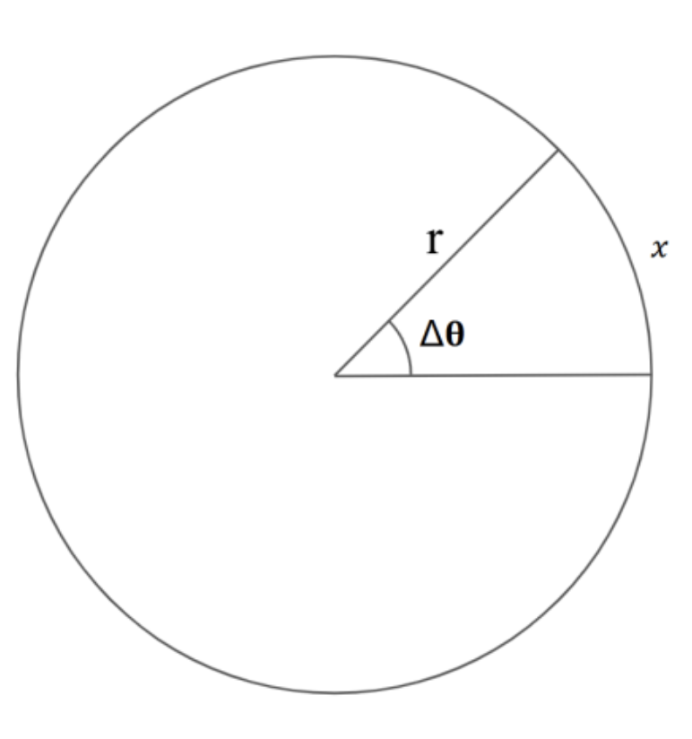
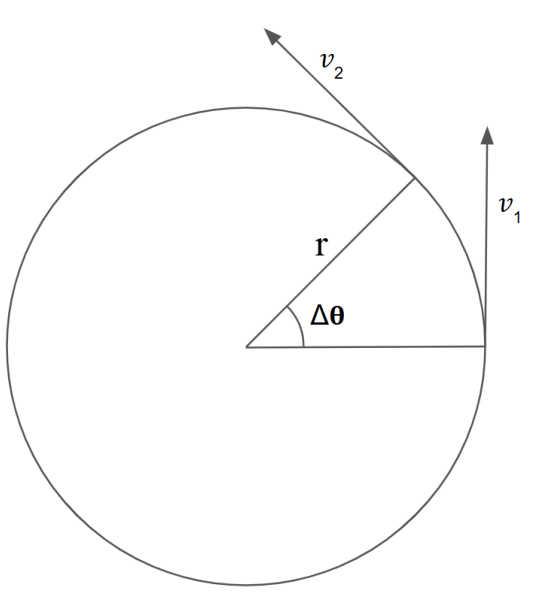
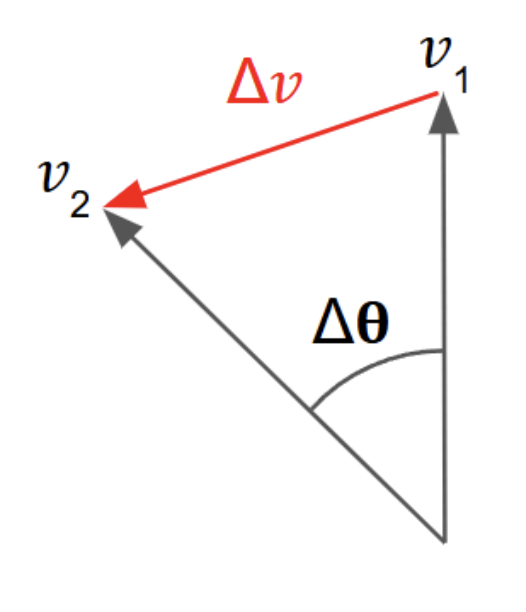

Physics • Mechanics
Round and Round We Go:
An introduction to circular and simple harmonic motion
Preface:
In and outside of school, mechanics has always fascinated me. In my opinion it feels the most tangible in a scene where you can understand everything with elegant proofs of geometry and trigonometry. Somewhere along the way in physics you get caught up with particle physics, chasing changes of quark flavours, etc which can seem very disconnected to the real world. I think it is a key aspect of physics to understand that we can predict and understand the world with just a pen and paper. I feel this is most reflected in doing kinematic equations, SUVAT or projectile motion, etc but here I’d like to speak to you about the beauty of circular motion and its link to SMH(simple Harmonic Motion). As much as this paper will be my explanations, you can find tons of proof elsewhere which makes this topic highly accessible. I hope I can inspire you to find your own favorite part of physics, regardless if it is this topic. But please stop by, you might learn a thing or two.
Circular Motion:
With all my explanations, I will try my best to ground them in examples. Let's start with a Record Player and a Vinyl record. Imagine the player spinning at a constant rate. It has a Radius r, and therefore a circumference of 2πr. Lets imagine a fly sitting on the very edge of this record, it travels a distance of 2πr in what ever time it takes to complete one rotation, let's call it T. Therefore we can derive a very simple equation for the linear velocity(more on this later don’t worry) which would use v = d/t giving us v = 2πr/T. Now imagine the fly moves down the record, towards its centre. The time for a full circle stays the same but the distance traversed is less as your value of r reduces. This would mean the fly’s linear velocity reduces (you can check this yourself!). Since the rotation speed of the record hasn't changed, but the fly’s linear velocity has, it leads us to believe that angular velocity is independent of radius.
Instead of looking at distance traveled(m) as our displacement value, let's take something that doesn't rely on radius. The angle with which the fly travels through in a given time interval or even one full rotation to keep things easy. In radians, 360° is equivalent to 2π Rad. Still using the time for a rotation to be T, we get ⍵ = 2π/T , where ⍵ is angular velocity. This is equivalent to saying ⍵ = θ/t, for any angle and time taken for that specific angle. Therefore the units would be Rad s-1 (even though Rad is called to be “unitless” lets just stick with this for now).
We can also relate these two equations now. Since v = r(2π/T) we can see that this is the same as v = ωr. We can also relate both to frequency of rotation as 1/T = f ⇒ ω = 2πf. These are the absolute fundamentals for circular motion.

Key Equations so far:
- s = θr
- ω = θ/t
- v = 2πr/T
- ω = 2π/T
- v = ωr
These all conclude the first part of circular motion. We next need to look at the acceleration caused by circular motion.
Acceleration is defined as the rate of change of velocity. Now velocity is a vector quantity, which means that it has a direction and magnitude. Now we are going to confine our theory to a constant rotation speed and not variable angular velocity. This means based on our equations the linear velocity of the “fly” is always constant. This means that the only thing changing is direction so we can use our traditional theory of a = Δv/Δt. Instead we need to rely on a more elegant theory and proof.

Let's consider the fly at t = 0 to have some linear velocity v. Now let's look at a small interval Δt seconds later. The magnitude of the velocity stays the same, but as you can see in the diagram the direction has changed.
Now, we can analyse these vectors separately, to go from v1 to v2, you need some vector that has a tip to tail to the first vector. This is how we carry out a vector subtraction. So to get from v1 to v2 we need to take this path which I will denote as Δv as it represents the change in velocity direction not magnitude.
Now from our earlier equations we can see that if we have a Δt, we will have a small change in angle, Δθ. (ω = θ/t) This means by using simple geometry we can see that the change in angle of the fly relative to the centre is equal to the angle between v1 and v2. If this seems confusing, try to use simple angle rules of angles in triangles sum to 180° and the fact that a tangent to a circle is always at 90° to deduce this yourself.

Now both velocities are of the same magnitude so we can use a special case formula to find the difference between them as this is the change in velocity between them. Again a very elegant formula which isn't hard to derive. Δv = 2v(sin(θ/2)), where v is the magnitude of the vectors v1 and v2. Apply that formula here and we can see that θ is very small as it's a very small change in angle. Hence we can use small angle approximation to find that Δv = 2v(θ/2) ⇒ Δv = vθ. Finally we have an expression for Δt as we use the equation (ω = θ/t) to get Δt = θ/ω. Now using a = Δv/Δt we can sub in the values, giving us a = vθ/(θ/ω), which simplifies to a = vω, and since v = ωr the more traditional equation would be a = v2/r.
Key equation:
- a = v2/r
- a = ω2r
- a = vω (all just same equation with others subbed in)
Simple Harmonic Motion:
SHM is defined in AQA A-level physics as an object that experiences a restoring force/acceleration proportional to its displacement and in the opposite direction. Which means for any displacement the system always tries to bring it back to its original equilibrium position (key emphasis on equilibrium position rather than just equilibrium because it in fact doesn't stay in equilibrium). Again let's keep this grounded in examples. Let's take a frictionless track with a mass that is attached to 2 springs either side which are both identical. The system is in equilibrium with both springs just about taut and still just about unextended. When we pull the mass one way say a displacement A away from its equilibrium point the force on the mass the instant we let go is pushing from the compressed spring F = kA and pulling from the extended one F = kA which gives a total of 2kA. These values are mostly arbitrary right now, but I want to observe how they change. Force is directly proportional to acceleration which means I am really just checking how acceleration behaves.
Now I will tell you that this mass after it is released will bounce back and forth forever if there is no energy loss, I will give you that information. But let’s see why. At our max displacement, the acceleration is also at its max, since it is proportional to displacement if we get any closer the acceleration reduces. At x = 0 the acceleration is 0 which makes sense its back in the middle there's no resultant force acting on it. However, it still has a velocity! This means it shoots off in the negative displacement where the acceleration increases to a maximum then back to 0 when it gets back. Let’s give this oscillation a time period of T. At t = 0 We have max displacement and acceleration. At t = T/4 We have 0 displacement and 0 acceleration. At t = T/2 we again return to a max but in the opposite direction. And 0 again at t = 3T/4 and max at t = T. This is shown in many great youtube videos where they specifically map out the exact values as a function of time which makes it a lot more digestible. But you can see that this follows a Cosine graph!
x = Acos(ωt)
dx/dt v = − Aωsin(ωt)
dv/dt a = − Aω²cos(ωt)
A is the starting max displacement of the mass and each next line is just the derivative with respect to time but the intriguing value here is that ω. Now trinometric graphs can be manipulated and the coefficient in front of the input tells you how many waves cycles fit between 0 and 2π. In the context of time its 0 and 2π seconds and lets just say I have that coefficient be 2π, just for now. That means theres 2π waves every 2π seconds, or in layman's terms one wave every one second. Now if 20 waves per second, I just need 2π × 20. This is actually just ω = 2πf which we proved earlier since 20 waves a second is the definition of the frequency. Therefore there is a magical link to circular motion (I promise we’ll get there).p>
If I bring you back to the fly example. But this time you're not looking at it with a bird's eye view. You're looking into the horizon so to speak. You'll see the Fly move the right at max displacement and then move back to the middle then to the left at max then back and forth. This is that awesome link between these topics! They are essentially the same thing. If you love trigonometry, I am sure you've seen a clip of the unit circle being used to define the sine and the cosine graphs where sine is the value of x as you move through an angle and cosine is the value of y.
Conclusion:
I could very honestly continue writing about this indefinitely. Something about these synoptic links seem so intriguing. The idea that someone can study physics and not celebrate these awesome tiny details between topics seems very odd to me. I hope you are able to find more links like this when you're studying any subject in the future and I really appreciate you taking the time to read about something that interests me. There are more similarities between topics than you think. Eventually, you'll find yourself having gone full circle.